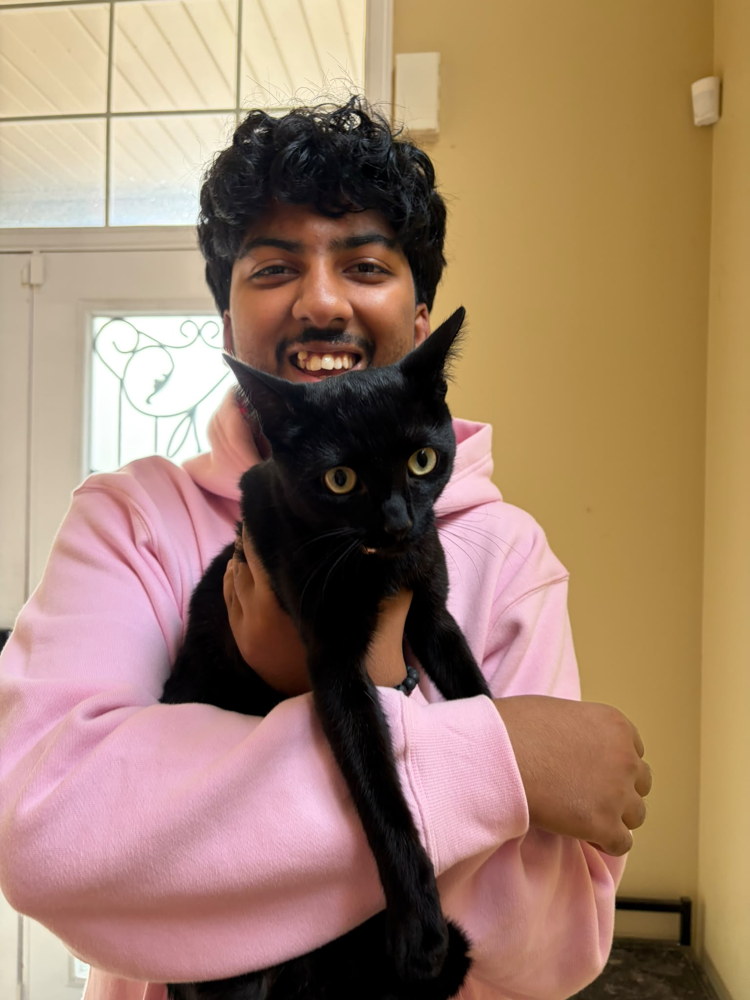
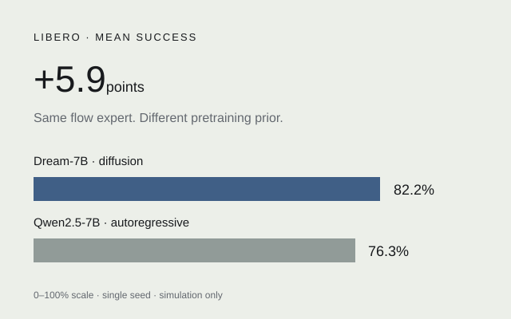
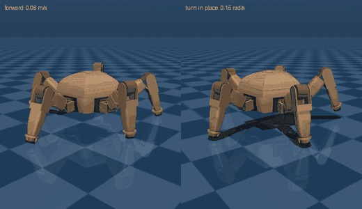

Robot learning researcher
Ryan Rahman
Robot learning researcher working on long-horizon manipulation, post-training, and force-aware manipulation.
Founding Research Engineer at Preload · Accelerated MASc researcher at Waterloo.

Currently
Founding Research Engineer
Preload · San Francisco
Education & research
University of Waterloo
Accelerated MASc · Mechatronics & robotics

Preprint · Results · 2026
A controlled backbone swap improves mean LIBERO success by 5.9 points, with the largest gains on long-horizon tasks.
Single-seed, simulation-only study.
Read the paper ↗
The bimanual hardware for tactile-aware folding.
Research proposal · IROS 2026 challenge
Reactive, multi-horizon flow policies and progressive tactile fusion for long-horizon folding on a 65-DoF bimanual platform.
Explore the proposal ↗

Engineering project · Locomotion
A five-legged robot designed end to end, from a Fusion 360 model to an analytic wave gait and a learned PPO walking policy.
Explore the build ↗Code ↗